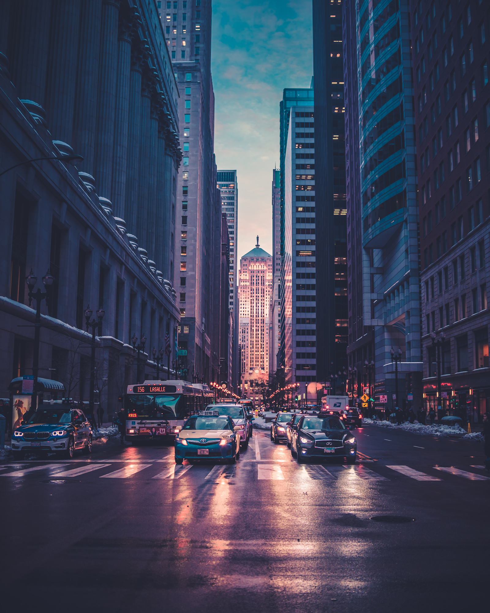

Develop any look
onto your own
footage.
Show FilmFeel a still you love — a frame, a photo, a mood. It builds the .cube LUT that prints that look onto your Apple Log 2 footage. Developed entirely under this roof: no image ever leaves your browser.
Develop a look
Watch the 30s demo


EXPOSED · LOG ● DEVELOPEDTRAY 01 — STREET DUSKFilmFeel_StreetDusk_AppleLog2_33.cube